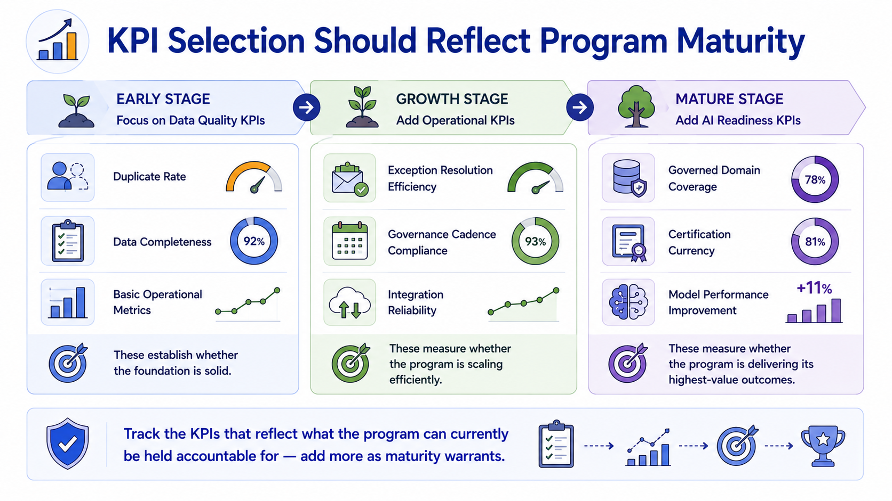
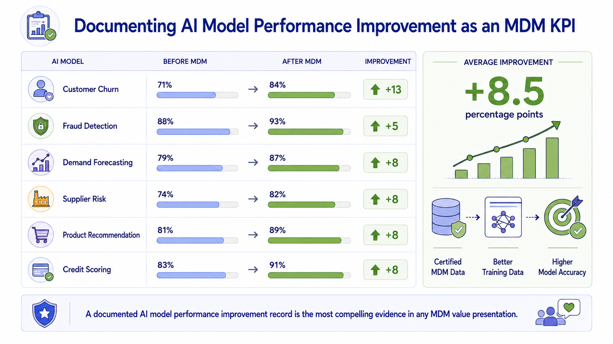

MDM KPIs
Module support notes
Selecting the Right KPIs for the Program's Current Stage
KPI proliferation is a real risk in MDM measurement programs — tracking too many metrics creates reporting overhead without adding insight, and obscures the handful of truly meaningful signals behind a wall of numbers. Selecting KPIs that reflect the program's current maturity stage prevents this.
An early-stage program that tracks AI readiness KPIs before it has stable quality and operational metrics creates a misleading picture — the AI readiness scores look poor not because governance is failing but because the foundation isn't yet complete. Tracking quality and operational KPIs first, adding AI readiness KPIs when AI pipelines are live and certifications are being issued, produces a KPI set that accurately reflects program performance at each stage.
- Early stage — data quality KPIs: duplicate rate, completeness scores, basic operational metrics; these establish whether the foundation is solid
- Growth stage — operational KPIs: exception resolution efficiency, governance cadence compliance, integration reliability; these measure whether the program is scaling efficiently
- Mature stage — AI readiness KPIs: governed domain coverage, certification currency, model performance improvement; these measure whether the program is delivering its highest-value outcomes
Tip
Track the KPIs that reflect what the program can currently be held accountable for — add more as maturity warrants. Limit each category to six KPIs maximum at any stage. When a KPI consistently hits target for three consecutive quarters, consider whether it has graduated to a monitoring metric rather than a management KPI, freeing space in the reporting framework for a higher-value measure.

AI Model Performance as an MDM KPI
Documenting AI model performance improvement as a formal MDM KPI requires establishing a consistent measurement methodology — recording each model's accuracy baseline before it began receiving certified MDM data, and tracking accuracy at defined intervals after the transition. The methodology should control for other variables where possible, so that performance improvement is attributable to the data quality change rather than to algorithm improvements that happened simultaneously.
A well-documented portfolio of AI model performance improvements, tracked consistently over time, is the single most compelling evidence of MDM value available to any program — because it directly connects data governance investment to the strategic AI outcomes that executives have committed to delivering.
Note
A documented AI model performance improvement record is the most compelling evidence in any MDM value presentation. Across six AI models, organizations consistently see accuracy improvements of 5–13 percentage points after transitioning to certified MDM data — covering churn prediction, fraud detection, demand forecasting, supplier risk, product recommendation, and credit scoring. A composite improvement of 8+ percentage points across a model portfolio is a value story that requires no data background to understand.

Track all three KPI categories, report each to the audience that acts on it, and raise targets as performance improves — that discipline is what keeps the measurement framework useful rather than just comprehensive.